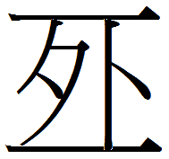
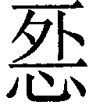
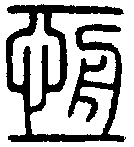
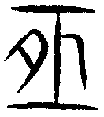
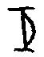
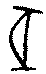
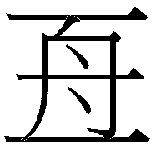
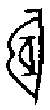
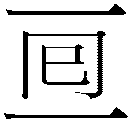
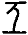

恒卦 雷風恒
恒，亨，无咎，利貞，利有攸往。初六，浚恒，貞凶，无攸利。九二，悔亡。九三，不恒其德，或承之羞，貞吝。九四，田无禽。六五，恒其德，貞，婦人吉，夫子凶。上六，振恒，凶。
【卦名】
今本：恒 帛書：恒 歸藏：恒 上博簡： 清華簡：
在各種資料中，恒卦卦名可說相當統一，都作恒或恆。上博簡的和清華簡的都是恒的異體字。
恒通解為恒常、長久之義。《老子》中的「常」字帛書甲乙本皆作「恒」。《爾雅》：「恒，常也。」
現代恒與恆兩字不分，這兩字可能分別從亘和亙兩字發展而來，亘和亙現代同樣也不分。
細究之，亘和亙兩字古字源並不一樣，恒與恆兩字也理當有所不同，因此恆（恒）字當是兩個不同的文字發展而合一的。
恆亙
《說文》二部：「，常也。从心从舟，在二之間上下，心以舟施，恆也。，古文恆，从月。《詩》曰：如月之恆。」「在二之間上下心以舟施」或作「在二之間，上下一心，以舟施」。
段玉裁注：「常當作長，古長久字衹作長。淺人稍稍分別，乃或借下帬之常為之，故至《集韵》乃有一曰久也之訓。而篇、韵皆無之，此俗字之不可不正者也。時之長與尺寸之長，非有二義。从心舟，在二之間上下，上下猶往復也。心舟施，恆也。謂往復遙遠，而心以舟運旋，歷久不變，恆之意也。宙下曰：舟車所極復也。此說會意之恉。胡登切。六部。俗本心上增一字，非。」
恆甲骨文作或，二中間是一個弦月，到戰國之後有時在月旁加心字，至小篆月字又訛變為舟，因此《說文》說「，古文恆，从月」。上博簡所用卦名即是恆的古文，而清華簡則在古文之外再加一心字。
依小篆解析字義，二字是以上下來象徵起點和終點，中間舟字則取其往復來回，舟行不已之意，以此運旋人的心，即是恆長。但此舟字顯然是月字訛變而成，二中有月又象什麼？有古文字學家認為，甲骨文中的弦月，是因為夜空中最常看到的月亮都是弦月。此看法來自徐灝。《說文解字注箋》：「日月之半體如弦緪兩端，故謂之弦。月盈則缺，唯弦時多，故謂之恆而訓為常。古祗作亙，从月从二，指上下弦。」「月與舟篆體相似，故譌从舟。亙恆緪三字古通。」
個人竊疑，二字的上下分別象徵天地，月在天地之間畫的是月行不殆之義。此即《彖傳》所言「日月得天而能久照」。
《說文》木部另有㮓字：「竟也，从木恆聲。」段注：「恆讀爲㮓。㮓，竟也。《大雅》恆之秬秠，毛云：恆，徧也。徧與竟義相足。」「今字多用亙不用㮓，舟在二之間，絕流而竟。會意也。恆之字本從心從。」古亙字似乎又有竟義，也就是窮盡的意思。
恆又與弦通。依《觀堂集林》，卜辭中另有亦為恒字，殷王王恒的恒作或 。王國維並引《詩‧小雅》「如月之恆」《毛傳》「恆，弦也」：「弦本弓上物，故字又從弓。然則 二字確為恆字。」
恒亘
《說文》二部：「，求也，从二从囘。囘，古文回，象回形。上下，所求物也。」段玉裁：「回者轉也。字經典不見。易屯卦磐桓，義當作般，般者辟也，者回也。」
即今之亘字，也是回字，回與亘都是由字所演變而來，所以段玉裁引屯卦為例，認為「磐桓」即「般」，迴轉的意思。、回、囘，亘可視為同一字的不同寫法，都是回的意思，而且也通桓。
甲骨文中回（亘）有很多種寫法，但形態大致為。
現今恒字的文義似乎主要從恆、亙而來，與回（亘）較無關，《說文》中並無從心從的字。
古籍難見恛（恒）字。唯《集韻》：「戸恢切，音回，昏亂貌。《揚子·太玄經》疑恛恛，註：小人執志不堅，恛恛然從人也。」《楚辭集注後語》「崩騰上下以恛惶兮」，恛似有意志不定之意，與現今恒字的恒常字義相悖。
恒我
有些學者解讀王家台秦簡認為恒卦卦名為「恒我」，但這個解讀有問題。因為學者依據的是秦簡易占類中的「恒我竊不死之藥以奔月」，這段占辭並沒有搭配的卦象出現，因此屬何卦的占筮記載不得而知。
《搜神記》卷十四：「羿請不死之藥於西王母，嫦娥竊之以奔月，將往，枚筮之於有黃。有黃占之曰：『吉。翩翩歸妹，獨將西行。逢天晦芒，毋恐毋驚。後且大昌。』嫦娥遂託身於月，是為蟾蠩。」
恒我即嫦娥，《搜神記》這段記載和秦簡很像是同樣的出處，而且記載方式和其他占辭很像，而從「翩翩歸妹」一句來看，「恒我竊不死之藥以奔月」似乎和歸妹卦比較有關。或者也有可能是泰卦，因泰卦六四「翩翩，不富以其鄰，不戒以孚」，六五「帝乙歸妹，以祉元吉」。
大恒與太極
《繫辭傳》：「易有太極，是生兩儀，兩儀生四象，四象生八卦，八卦定吉凶。」帛書作：「易有大恒，是生兩檥，兩檥生四馬，四馬生八卦，八卦生吉凶。」
為何「太極」作「大恒」引起學界的關注，也有很多學者為文探索。
今本《繫辭傳》中的恒字帛本同樣作恒，而其他的極字，「三極之道」作「三亟之道」之外，「極數知來」和「極天下之情」的極都同樣作「極」。
《說文》：「極，棟也。从木，亟聲。」《說文》：「亟，敏疾也。从人从口，从又从二。二，天地也。」
《爾雅》：「至也。」「届，極也。」「子子孫孫，引無極也。」「東至於泰遠，西至於邠國，南至於濮鈆，北至於祝栗，謂之四極。」極為極限、窮極、極盡、極至的意思。《詩經》中也多作此義，如「昊天罔極」、「誰因誰極」。《尚書》「建用皇極」則通解極為中，皇極為大中之道，亦有準則之義。
極字是從亟字發展而來，甲骨文亟字二字中間有一人。于省吾：「象人頂天立地。」到金文，開始又加入「口」和「攴」。
如前所述，亙本就有窮盡、徧及之義，這與極字的字義是互通的。
恒亦有典範準則之義，《爾雅》：「典彝法則刑範矩庸恒律戛職秩常也。」
【卦義】
恒久、持久，長久。好事多磨。
恒卦上震下巽，長男動於外，長女柔順於內，男主外、女主內，六爻相應，夫婦內外分工各得其所，象徵一個穩定而和諧的家庭，可以維持恒久。
恒卦是繼咸卦而來，並與咸卦為相綜的一對卦。《序卦傳》：「夫婦之道，不可以不久也，故受之以恒。恒，久也。」咸卦「取女吉」，為感情最豐富浪漫的少男少女結婚。至恒卦，少男少女變為成熟穩重的長男長女，又有很好的家庭分工，為家庭穩定恒久，夫妻偕老之道。
《周易》男下於女為陰陽相交，婚合之象，反之則為陰陽不交。恒卦卦象為長男在上，長女在下，男女卦氣不交，為何婚姻吉而可久？此因長男與長女分工好，各得其所之故。從另一觀點來說，益卦長男下於長女，長女與長男相交，有婚合之象，是以感情為基礎而得婚合者。恒卦則是以生活分工的現實理由而結合，雖較無濃情蜜意之感情基礎，但可當作以責任結合而婚姻美滿的典範。從咸卦少男少女的青春多情與浪慢，演進到恒卦長男長女的成熟、責任，與穩定，也可說是夫妻相處之道的必然轉化。
八卦中震與巽都是「動」的意思，差別在於震是陽氣之動，屬於陽剛式的，以雷象之；巽則是陰氣之動，屬於陰柔式的，以風象之。震卦之動宜於在外卦，反之若在內卦則有伺機而動的意味。而巽卦之動，則主要從內卦。因此恒卦震巽各得其所，雷風相與，動而不屈，可長可久。
得恒卦代表家庭穩定而和諧外，凡事可以守成，可長可久，細水長流，但比較不利於創新求變。《象》曰：「雷風，恒，君子以立不易方。」此告戒君子應當堅守自己立場，因此較不利於改變做法，也就是要有恒心。因此恒卦之吉道也在於維持恒常，無恒心而隨意改變立場者則凶。此上六所說的「振恒，凶」。
恒，亨，无咎，利貞，利有攸往。
《彖》曰：恒，久也。剛上而柔下，雷風相與，巽而動，剛柔皆應，恒。恒亨，无咎，利貞，久於其道也。天地之道，恒久而不已也，利有攸往，終則有始也，日月得天而能久照，四時變化而能久成，聖人久於其道而天下化成，觀其所恒而天地萬物之情可見矣。
《象》曰：雷風，恒，君子以立不易方。
《繫辭》：○ 恒，德之固也。 ○ 恒，雜而不厭。 ○ 恒以一德。
《易之義》：恒言不已。
恒久而嘉會合禮，沒有罪咎。利於正定則利有所往。
恒卦宜於貞定不變而守成，貞定之後才利於有所往。所以《象傳》說「君子以立不易方」。卦象漸入而動，雷與風相得益彰，漸進而動，六爻皆相應，因此能夠長長久久。
鄭玄：夫婦以嘉會禮通，故无咎。其能和順幹事，所行而善矣。
【字義】
立不易方：易為變易，改變。方為方所。《論語‧為政》：「為政以德，譬如北辰，居其所而眾星共之。」
初六，浚恒，貞凶，无攸利。
《象》曰：浚恒之凶，始求深也。
要求過深的恒道，堅定則凶，沒有利益。
初爻為恒卦一開始的時候，一開始就要求過深，苛刻無理之道，無以長久，若堅定此道為凶，無利益。初在最下最深之處，故為浚。此有如兩人才剛開始在一起，就苛責太過，反而有違和諧。
【字義】
浚恒：浚，音俊，鄭作濬，深的意思。浚恒，求恒過深，求恒太苛刻與超過。王弼：「處恒之初，最處卦底，始求深者也。求深窮底，令物无餘縕，漸以至此，物猶不堪，而況始求深者乎？」虞翻：「浚，深也。初下稱浚，故曰浚恒。乾初爲淵，故深矣。失位變之正，乾爲始。故曰始求深也。」侯果：「浚，深。恒，久也。初本六四，自四居初，始求深厚之位者也。」朱震：「初本泰之六四成巽，九出六入，有陰陽相求之象。初入卦底，在兌澤之下，巽為股，股入于澤下，入之深者也，浚之象。故曰浚恒。」「初不正，不量而入，始與四交，求之太深，非可久之道，故凶。夫人道交際，貴乎知時而適淺深之宜，故孟子三見齊王而不言。」蘇軾：「下沈曰浚，上奮曰振。」帛書作「敻恒」，《說文》：「營求也。」段注：「引伸其義爲遠也。」「角部觼或作鐍。」敻引申為遠的意思，又可通矞，《說文》：「矞，以錐有所穿也。」此處當取鑽鑿之義，即浚之往深處疏通。
九二，悔亡。
《象》曰：九二悔亡，能久中也。
後悔消失。《象》曰：「九二悔亡，能久中也。」因為能長久秉持中庸之道，所以能夠不再後悔。悔亡意指原本應當有悔，後來因為行為正確而不再有悔。九二悔亡，是因為能夠堅守中庸之道，也就是「久中」。
九三，不恒其德，或承之羞，貞吝。
- 《象》曰：不恒其德，无所容也。
- 《論語‧子路》：子曰：「南人有言曰：『人而無恒，不可以作巫醫。』善夫！『不恒其德，或承之羞。』」子曰：「不占而已矣。」
- 《禮記‧緇衣》：子曰：「南人有言曰：『人而無恒，不可以為卜筮。』古之遺言與？龜筮猶不能知也，而況於人乎？《詩》云：『我龜既厭，不我告猶。』《兌命》曰：『爵無及惡德。』民立而正，事純而祭祀，是為不敬。事煩則亂，事神則難。《易》曰：『不恒其德，或承之羞。』『恒其德偵。婦人吉，夫子凶。』」
- 《道德經》第二十八章：知其雄，守其雌，為天下谿。常德不離，復歸於嬰兒。知其白，守其黑，為天下式。為天下式，常德不忒，復歸於無極。知其榮，守其辱，為天下谷，常德乃足，復歸於樸。樸散則為器，聖人用之，則為官長，故大制不割。
- 《二三子》：卦曰：「不恒亓德，或承之憂，貞藺。」孔子曰：「此言小人知善而弗為，方進而无止，損幾則擇矣，能…故曰貞閵。」
不能長久維持德行，可能因此而引來羞辱，堅定則悔恨。
《象》曰：「不恒其德，无所容也。」德行無恆常者為人所不容，因此可能引來羞辱。
《論語》中孔子曾引述「不恒其德，或承之羞」來說明南人談到的一段諺語：「人而無恒，不可以作巫醫。」然而自古註解就相當分歧。特別是孔子最後又補充說「不占而已矣」，朱熹註說「其義未詳」。
《論語》這段，《禮記‧緇衣》另有記載，但略為不同：
子曰：「南人有言曰：『人而無恒，不可以為卜筮。』古之遺言與？龜筮猶不能知也，而況於人乎？《詩》云：『我龜既厭，不我告猶。』
依《禮記》，孔子這段話意思大概是說，人若沒有恆心，就算卜筮也沒用。連鬼神也無法知道你到底想做甚麼了，更別說是人了。
《詩經》的意思則是說，有人一直不斷地問龜卜，問到龜卜之神都感到很厭惡了，龜卜自然就不再告訴吉凶。猶，圖謀，指的是問卜者的疑問。
《禮記》另引《兌命》「爵無及惡德」，鄭注：「惡德，無恒之德。」「言君祭祀，賜諸臣爵，毋與惡德之人也。民將立以為正，言放效之疾。事皆如是而以祭祀，是不敬鬼神也。惡德之人使事煩，事煩則亂，使事鬼神又難以得福也。」《兌命》所講的「惡德」即「無恒」，君王祭祀結束之後，會賜爵給諸臣，但唯獨無恒而惡德之人不賜爵，因為怕人民以惡德之人為正，然後仿效他。接下來全部事都像這樣去祭祀，如此將對神明不敬。
《老子道德經》今本「常」字帛本作恆，第一章「道可道非常道」作「道可道也，非恆道也」。二十八章「常德不離」、「常德不忒」、「常德乃足」皆作「恆德」。
帛書《二三子》所引孔子的解釋認為，這指的是小人知道了善卻不去做，才剛進了一步就不知停止。如此損壞行動之時機必定事敗。幾，動之微，指定事之最佳時機。擇，假借為斁，敗也。
竊疑德或可解釋為「得」，不恆其得，不常其得，為能捨者，所以後言「或承之羞」，反可得到眾人所進獻的膳羞。貞吝者，堅定其得則吝而難行。因此所講的是人當捨才能有得。六五「恒其德，貞，婦人吉，夫子凶」，為常其得而不能捨者，常其得者為婦女之吝道，以此貞定，婦人則吉，夫子則凶。
【字義】
不恒其德：德傳統通解為道德的德。不恒其德，為德行無常。德亦通得，不恒其得為不常其得。
或承之羞：有多種解釋，傳統以「羞」為羞辱，由此分為兩種解釋：一、不恒其德的人可能因此承受羞辱。二、任何人都可以來羞辱不恒其德之人。「或」有兩種解釋，一是可能，表示可能發生，有告戒之意。二是有人，意指任何人都可這麼做。承，奉承，奉獻，另也有承受、接受的意思。《說文》：「承，奉也，受也。」《本義》：「承，奉也，言人皆得奉而進之，不知其所自來也。」朱熹採用的是第二種解釋。「羞」除了解釋為羞辱，還可解釋為所敬獻的食物。或承之羞，或者可以向其進獻食物、有人會向其敬獻食物。承通烝，祭祀，或進獻。《說文》：「羞，進獻也，从羊。羊，所進也。」《爾雅》：「羞，餞，迪，烝，進也。」《周禮》、《禮記》中皆作進獻或所進獻之飲食，如薦羞、膳羞、共祭祀之好羞。「或承」鄭本作「咸承」。否卦六二「包承」，六三「包羞」。
九四，田无禽。
《象》曰：久非其位，安得禽也。
畋獵抓不到獵物。《象》曰：「久非其位，安得禽也。」長久都不在其位，言做事無恒心，荒廢很久，當然無法有任何收穫。
【字義】
田无禽：禽泛指飛禽走獸、獵物。田无禽有兩種解讀方式。一，田為田地，田地間無禽獸。對比於師六五「田有禽」為田地間有禽獸。二，田為畋獵，田無禽為畋獵不得禽獸，沒有收獲。依《象傳》「久非其位，安得禽也」，當作此解。
六五，恒其德，貞，婦人吉，夫子凶。
- 《象》曰：婦人貞吉，從一而終也。夫子制義，從婦凶也。
- 《禮記‧緇衣》：恒其德偵。婦人吉，夫子凶。
能夠長久堅定其美德，從一而終，對女子而言，這是很好的德性，大吉。但對於男子而言，身為義理的制定者，本應剛強果斷，有自己的主見，反而採取柔順之婦道，有優柔寡斷、無法成大事之象，凶。
依鄭玄註：貞為問正，詢問事情之正。以問正於人為常德，婦人如此為吉。若是男子則應該專心做正事，像婦女一樣「恒其德偵」，不停地問人什麼才是正德，反而就不是常德，這是無恒之人，因此為凶。
六三言「不恒其德」，因此六五似乎應讀做「恒其德」為宜。「貞」或獨立一句，或可讀作「貞婦人吉，夫子凶」，此事問婦人為吉，問夫子則凶。
【字義】
恒其德貞：《禮記》引作「恒其德偵」，鄭玄注：「偵，問也。問正為偵。婦人，從人者也，以問正為常德則吉。男子當專行幹事，而以問正為常德，是亦無恒之人也。」
上六，振恒，凶。
《象》曰：振恒在上，大无功也。
以振動為恒，凶。
或：改變原本穩固的常態，凶。
原本事情已經穩定，一切有一定的軌道，現在卻輕舉妄動，貿然改變做法，違背過去的慣例，不但不能成事，反而動搖既有的根本，凶。
振，動，鄭玄：「振，搖落也。」有破壞之義。恒，恒久。
【字義】
振恒：《周易集解》作「震恒」，虞翻：「在震上，故震恒。」馬融：「振，動也。」鄭玄：「振，搖落也。」《說文》引作「榰恒」：「柱砥，古用木，今以石。从木耆聲。易：榰恒凶。」段玉裁：「《釋文》曰：振恆，張璠作震，今易皆同張。耆聲辰聲合韵最近，許偁蓋孟易也。」《爾雅·釋言》：「榰，柱也。」振恒有多種不同解釋。一是以振動為恒，恒卦以居不易方，以靜制動為吉，上九振動不已，以震動為恒常，所以為凶。王弼：「夫靜為躁君，安為動主。故安者上之所處也，靜者可久之道也。處卦之上，居動之極，以此為恒，无施而得也。」孔穎達：「凡處於上者，當守靜以制動。今上六居恒之上，處動之極，以振為恒，所以凶也。」二、振為快速的振動，引申為不節制之義，也有妄動的意味。程頤：「振者，動之速也，如振衣，如振書，抖擻運動之意。在上而其動无節，以此為恒，其凶宜矣。」三、鄭玄以振為搖落，振引申可為撼動、破壞、改變等意味，振恒為改變原本的恒常。帛書作「敻恒」
【彖傳】
《彖》曰：恒，久也。剛上而柔下，雷風相與，巽而動，剛柔皆應，恒。恒，亨，无咎，利貞，久於其道也。天地之道，恒久而不已也，利有攸往，終則有始也，日月得天而能久照，四時變化而能久成，聖人久於其道而天下化成，觀其所恒而天地萬物之情可見矣。
恒，久也：恒是長久之義。
剛上而柔下：以卦變解釋恒卦。恒卦是由泰卦而來，泰初九至四為剛上，六四至初為柔下。
雷風相與：以上下二體卦象解釋卦義，雷與風各爻皆相應，乃雷風相與之象。
巽而動：以上下二體卦德解釋卦義。恒卦下卦巽，上為震動。入而能動之義。
剛柔皆應：恒卦六爻全部都相應。六十四卦只要上卦與下卦為陰陽相反之卦就會六爻相應，《周易》中有四對卦具備這樣的條件：泰與否，咸與恒，損與益，既濟與未濟。
恒，亨，无咎，利貞，久於其道也：因為能夠恒久於道，所以可得「亨，无咎，利貞」。
利有攸往，終則有始也：生生之謂易，恒卦恒常之道在於終則有始，循環不已，生生不息。此有如易經六十四卦，以未濟為終，因既濟為定而窮，未濟不定而能通，通則有始而循環不已。巽為利，震在外為攸往，因此為利有攸往之象。
日月得天而能久照，四時變化而能久成：日月得天道而能長久照明天下，四時因為變化而能夠長久成就萬物。
聖人久於其道而天下化成，觀其所恒而天地萬物之情可見矣：人因為恒久於天道，天下化成。觀恒常之道，就可見天地萬物之情。如日月之久照，四時之變化，乃天地之恒。